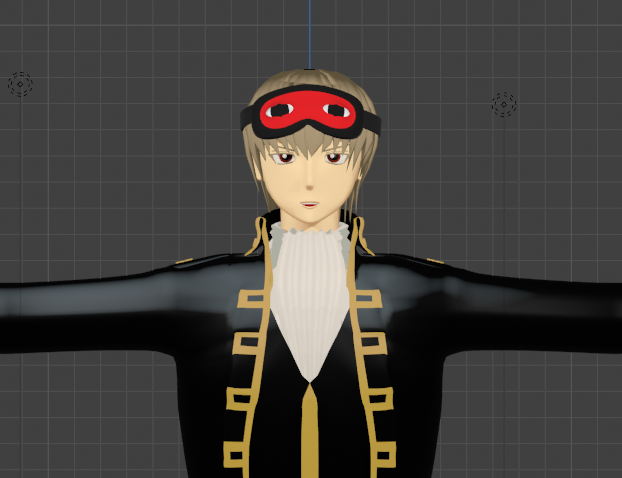
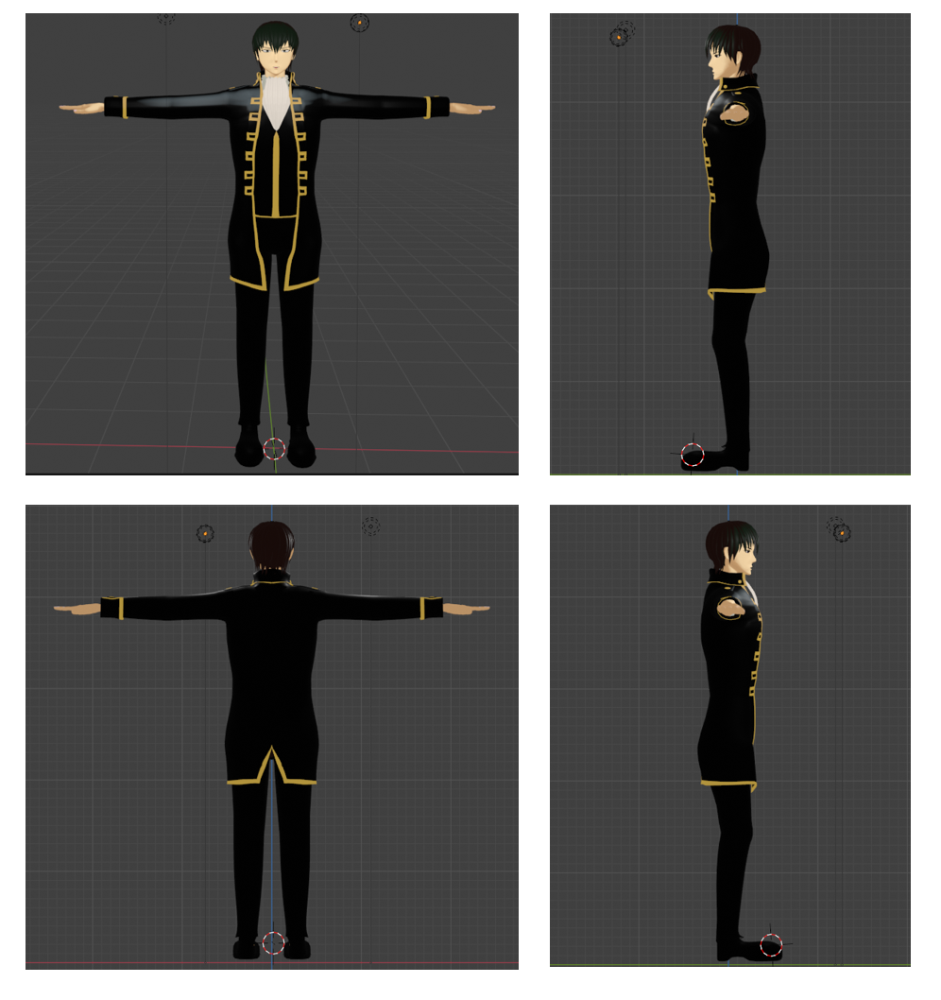
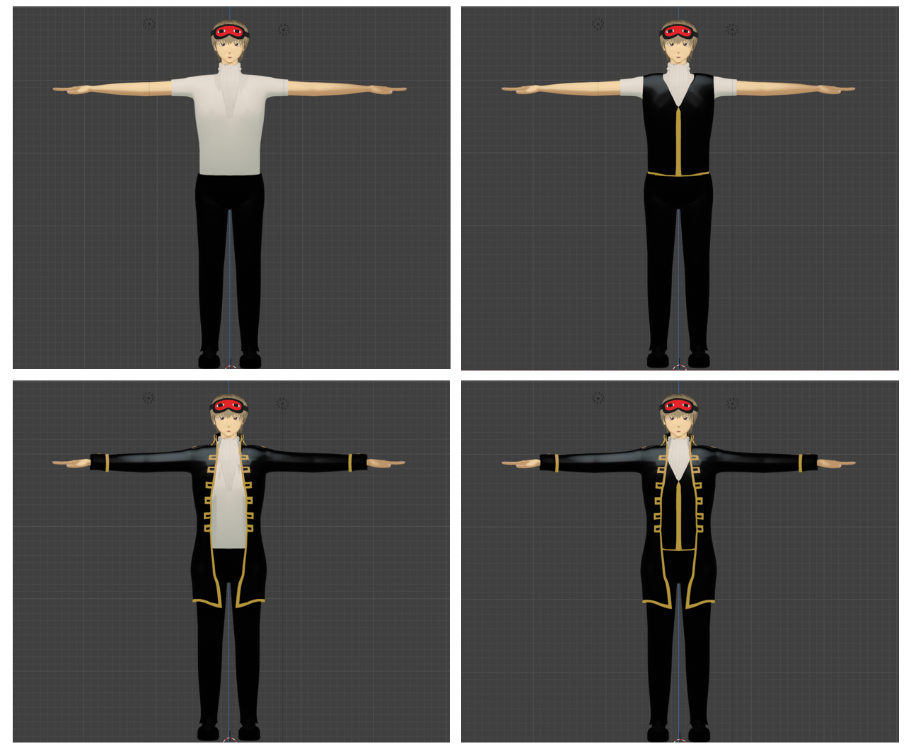
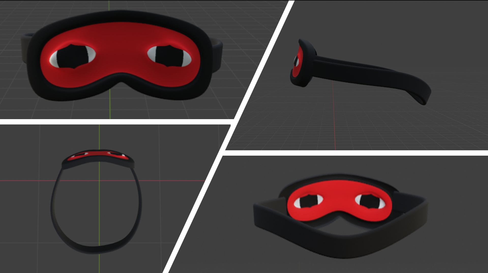
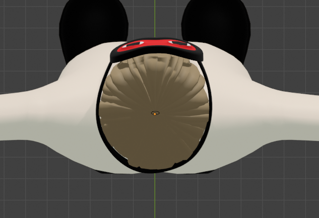
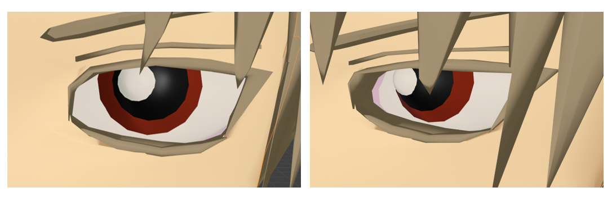
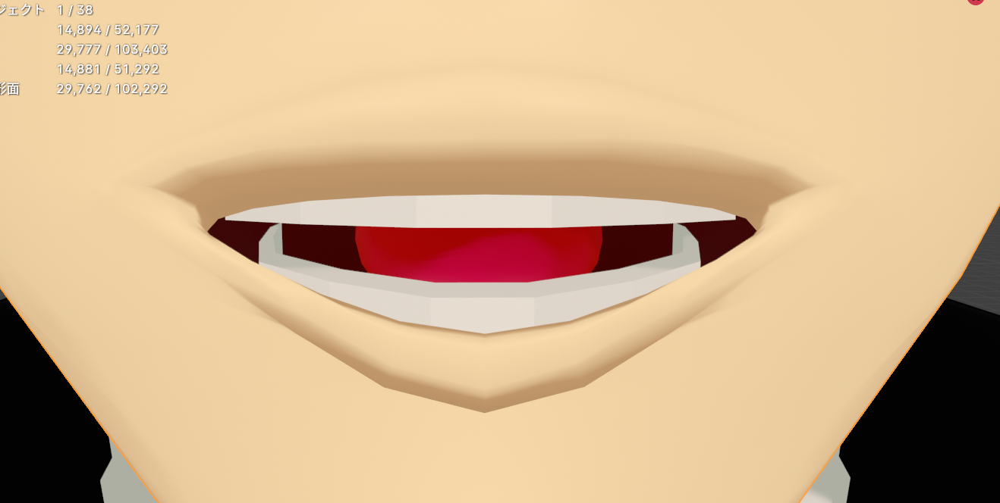

前回の土方十四郎に引き続き、Blenderを用いて「銀魂」という漫画の沖田総悟の3Dモデルを作成しました！！
3Dモデルの全体像
作成した3Dモデルを前後左右の視点から見た画像を次に表示します。
できるだけ自然な等身で作成することを意識しました。また、腰や膝を少し曲げることでよりリアルな人間の体に近づけました。

工夫したところ
前回同様、3Dモデルの服をそれぞれ作成することにより、服を脱ぎ着することを可能にしました。 
今回は沖田のチャームポイントであるアイマスクの作成も行いました！
アイマスクの紐の感じや、頭にフィットさせるための微調整を行いました。


さらには、前回紹介できなかった細部のこだわりポイントを紹介します！
①目の内部
目を正面から見ると白目しか見えませんが、少し横から見ると赤い部分が見えるようにしています。

②口の内部
口の細部にまでこだわって作成しており、歯や舌まで作成しています。

Blenderのデータ
HijikataのBlenderのデータ